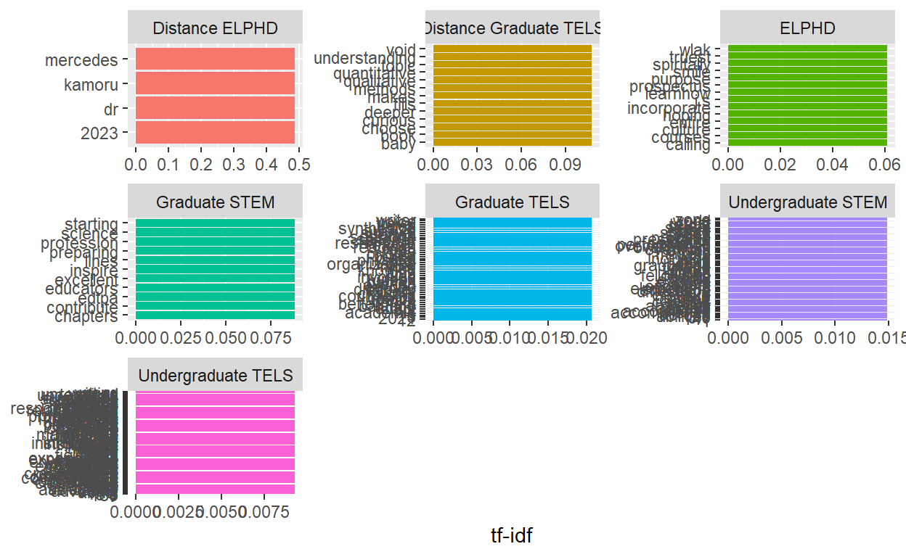
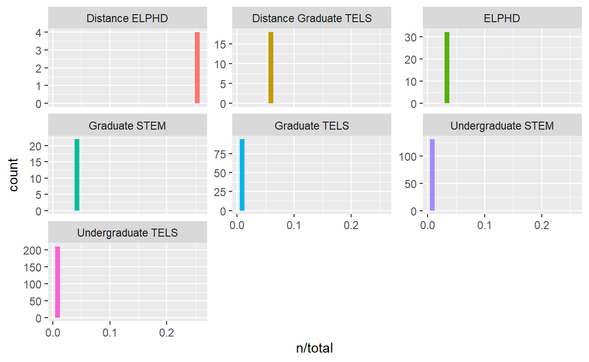
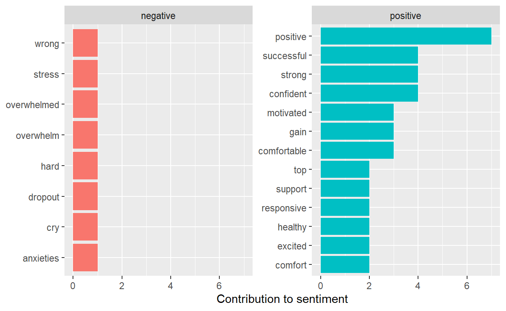
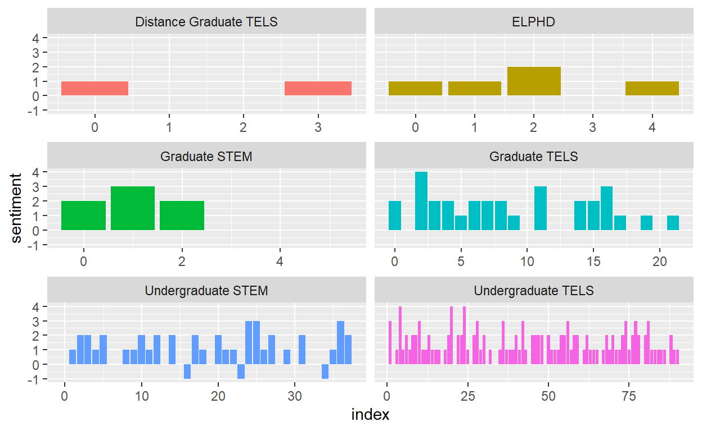
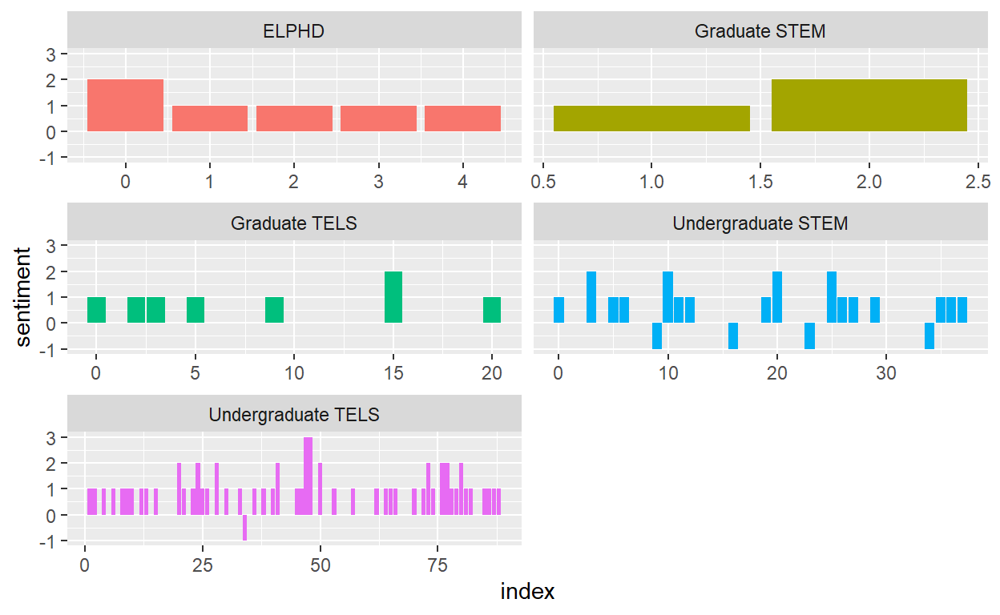
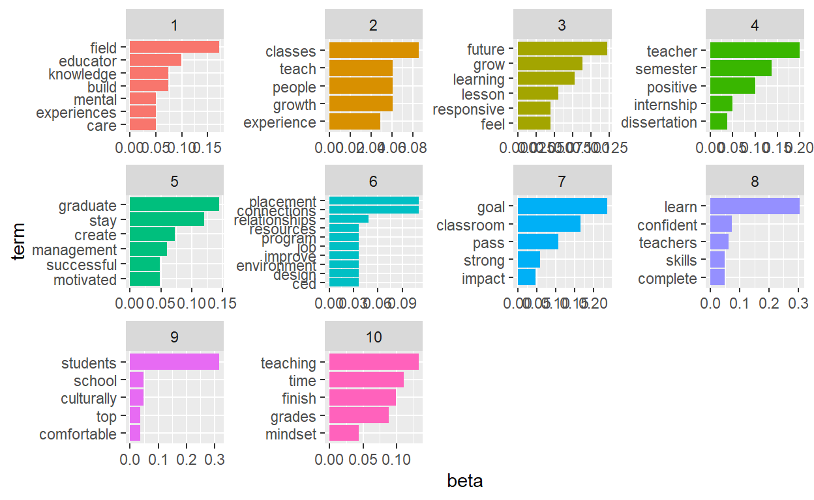

1 Prepare
Background
While at my Graduate position in the Media and Education Technology Resource Center (METRC) we wanted to have an event that would get students into METRC. The idea was that students would come into METRC to hand write a yearly goal on a paper feather during October through November. The goals would then be combined into a collaborative wing mural that would be installed before Education Week so that students could come and take photos.
Research Questions
- What are the Student goals about?
- How are student’s feeling about their Goals?
- How do we quantify what the Student Goals are about?
Methods
Common Word Counts Text Mining IF - ITF Sentiment Analysis Topic Modeling
2. Wrangle
Here we will ‘wrangle’ the data by a. Reading the Data, b. Data Reduction and c. Tidying the Data (Krumm et al., 2018).
It shows that we have 213 observations and 3 variables.
a. READ Data
Let’s read our data into our Environment and assign it to a variable name soar_data1.
soar_data1 <- read_csv("data/Soar-resposes.csv")
soar_data1
# A tibble: 215 x 3
Timestamp Department Goal
<chr> <chr> <chr>
1 11/9/2021 10:00:18 Distance Graduate TELS Deeper understanding of ~
2 11/9/2021 10:00:46 Distance Graduate TELS Choose a dissertation to~
3 11/9/2021 10:01:05 Distance Graduate TELS 4.0 Baby
4 11/9/2021 10:01:16 Distance Graduate TELS To Graduate
5 11/9/2021 10:01:28 Distance Graduate TELS Finish my Book
6 11/9/2021 10:02:00 Graduate TELS Learn about 3 topics and~
7 11/9/2021 10:02:25 Graduate TELS Reamin mentally, physica~
8 11/9/2021 10:03:02 Graduate TELS Balance of learning, bei~
9 11/9/2021 10:03:22 Graduate TELS To stay healthy and lear~
10 11/9/2021 10:03:39 Graduate TELS Better time management a~
# ... with 205 more rowsb. Data Reduction
The initial Soar Data shows that we have 213 observations and 3 variables. However, we need to clean it up selecting only the students and adding a unique identifier.
#Clean Data to omit staff, include unique identifier
soar_data2 <- soar_data1 %>%
select(c('Department', 'Goal')) %>% # only select Department and the goal data
filter(Department == "Distance Graduate TELS" | Department == "Graduate TELS"
| Department == "ELPHD" | Department == "Distance ELPHD" |
Department == "Graduate STEM" | Department == "Undergraduate TELS" |
Department == "Undergraduate STEM") %>% #filter out departments to omit staff
group_by(Department) %>%
na.omit()
soar_data2 <- soar_data2[-51, ] # delete row 51 that contains "N/A" for goal
soar_data2 <- tibble::rowid_to_column(soar_data2, "index") #add unique identifier
soar_data2 %>%
head()
# A tibble: 6 x 3
# Groups: Department [2]
index Department Goal
<int> <chr> <chr>
1 1 Distance Graduate TELS Deeper understanding of Quantitative a~
2 2 Distance Graduate TELS Choose a dissertation topic that makes~
3 3 Distance Graduate TELS 4.0 Baby
4 4 Distance Graduate TELS To Graduate
5 5 Distance Graduate TELS Finish my Book
6 6 Graduate TELS Learn about 3 topics and become more c~I quickly visualize the data looking at all occurrences and the percentage of participation for each department with the VTREE package.
We see that students from the Undergraduate department with the highest participation rate is Undergraduate TELS at 47% participation rate. The highest participation rate in the Graduate department is also from TELS at 14% of participants. The smallest participation rates are in Graduate STEM and all DE departments. We can quickly conclude that Undergraduate students in general frequent METRC the most out of the College of Education from the event data.

c. TidyText
Using Wickham 2014, Tidy principleswe tokenize our data making each variable a column, each observation a row and each type of observational unit is a table with:
unnest_tokens() that splits a column into tokens
anti_join() returns all rows from x without a match in y and remove stop word.
tokenize our data
soardata2_df <- soar_data2 %>% #create new tokenize data frame
unnest_tokens(output = word, input = Goal) %>%
anti_join(stop_words, by = "word") # remove all stop words
I noticed I wrangled out my unique identifier. So, I created a new column to count up later on with the variable name ‘number.’
soardata2_df <- soardata2_df %>%
mutate(number = row_number()) # add a new column named number to be used as the unique identifier
soardata2_df %>%
head()
# A tibble: 6 x 3
# Groups: Department [1]
Department word number
<chr> <chr> <int>
1 Distance Graduate TELS deeper 1
2 Distance Graduate TELS understanding 2
3 Distance Graduate TELS quantitative 3
4 Distance Graduate TELS qualitative 4
5 Distance Graduate TELS research 5
6 Distance Graduate TELS methods 63. Explore
Let’s explore our data looking for common words together, and then filter out sentiments.
Count Tokenized Words
Let’s count the tokenize words. It looks as though Students, Learn, and Goal are at the top three common words in the Soar Data and we have a lot of words that only appeared once or twice. What was interesting as most are unique words. I may not stem the words then.
Word Cloud of Common Words in ALL Departments
Noticing that “student” and “learn” are at the top of the list. “Goal” was part of the prompt so that word being in the top three is not a surprise.
soardata1_df_counts <- soardata2_df %>% # create new variable for counts
ungroup ()%>% #ungroup the tokenize data to create a wordcloud
count(word, sort = TRUE)
wordcloud2(soardata1_df_counts)
Common Words by Department
It is hard to visualize the data in a table form.
soardata1_df_counts <- soardata2_df %>% # create new variable for counts
count(word, sort = TRUE)
soardata1_df_counts
# A tibble: 511 x 3
# Groups: Department [7]
Department word n
<chr> <chr> <int>
1 Undergraduate TELS students 20
2 Undergraduate TELS learn 19
3 Undergraduate TELS field 14
4 Undergraduate TELS teacher 13
5 Undergraduate TELS classroom 12
6 Undergraduate TELS connections 9
7 Undergraduate TELS placement 9
8 Undergraduate STEM graduate 8
9 Undergraduate TELS semester 8
10 Undergraduate TELS teaching 8
# ... with 501 more rowsMaybe a bar graph would be a better visualization viewing each departments most common words.
soarviz_1 <- soardata2_df %>%
count(word, sort = TRUE) %>%
filter(n > 10) %>%
mutate(word = reorder(word, n)) %>%
ggplot(aes(n, word, fill = Department)) +
geom_col(show.legend = FALSE)
soarviz_1 %>%
head()
$data
# A tibble: 5 x 4
# Groups: Department [1]
Department word n .group
<chr> <fct> <int> <int>
1 Undergraduate TELS students 20 1
2 Undergraduate TELS learn 19 1
3 Undergraduate TELS field 14 1
4 Undergraduate TELS teacher 13 1
5 Undergraduate TELS classroom 12 1
$layers
$layers[[1]]
geom_col: width = NULL, na.rm = FALSE
stat_identity: na.rm = FALSE
position_stack
$scales
<ggproto object: Class ScalesList, gg>
add: function
clone: function
find: function
get_scales: function
has_scale: function
input: function
n: function
non_position_scales: function
scales: list
super: <ggproto object: Class ScalesList, gg>
$mapping
Aesthetic mapping:
* `x` -> `n`
* `y` -> `word`
* `fill` -> `Department`
$theme
list()
$coordinates
<ggproto object: Class CoordCartesian, Coord, gg>
aspect: function
backtransform_range: function
clip: on
default: TRUE
distance: function
expand: TRUE
is_free: function
is_linear: function
labels: function
limits: list
modify_scales: function
range: function
render_axis_h: function
render_axis_v: function
render_bg: function
render_fg: function
setup_data: function
setup_layout: function
setup_panel_guides: function
setup_panel_params: function
setup_params: function
train_panel_guides: function
transform: function
super: <ggproto object: Class CoordCartesian, Coord, gg>total_words <- words_by_Department %>%
group_by(Department) %>%
summarize(total = sum(n))
words_by_Department <- left_join(words_by_Department, total_words)
words_by_Department
# A tibble: 511 x 4
Department word n total
<chr> <chr> <int> <int>
1 Distance ELPHD 2023 1 4
2 Distance ELPHD dr 1 4
3 Distance ELPHD kamoru 1 4
4 Distance ELPHD mercedes 1 4
5 Distance Graduate TELS 4.0 1 18
6 Distance Graduate TELS baby 1 18
7 Distance Graduate TELS book 1 18
8 Distance Graduate TELS choose 1 18
9 Distance Graduate TELS curious 1 18
10 Distance Graduate TELS deeper 1 18
# ... with 501 more rowsLet’s explore the Zipfs law
From Text Mining with R - Zipf’s law states that the frequency that a word appears is inversely proportional to its rank.
tf_idf <- words_by_Department %>%
bind_tf_idf(word, Department, n)
tf_idf
# A tibble: 511 x 7
Department word n total tf idf tf_idf
<chr> <chr> <int> <int> <dbl> <dbl> <dbl>
1 Distance ELPHD 2023 1 4 0.25 1.95 0.486
2 Distance ELPHD dr 1 4 0.25 1.95 0.486
3 Distance ELPHD kamoru 1 4 0.25 1.95 0.486
4 Distance ELPHD mercedes 1 4 0.25 1.95 0.486
5 Distance Graduate TELS 4.0 1 18 0.0556 1.25 0.0696
6 Distance Graduate TELS baby 1 18 0.0556 1.95 0.108
7 Distance Graduate TELS book 1 18 0.0556 1.95 0.108
8 Distance Graduate TELS choose 1 18 0.0556 1.95 0.108
9 Distance Graduate TELS curious 1 18 0.0556 1.95 0.108
10 Distance Graduate TELS deeper 1 18 0.0556 1.95 0.108
# ... with 501 more rows# A tibble: 511 x 6
Department word n tf idf tf_idf
<chr> <chr> <int> <dbl> <dbl> <dbl>
1 Distance ELPHD 2023 1 0.25 1.95 0.486
2 Distance ELPHD dr 1 0.25 1.95 0.486
3 Distance ELPHD kamoru 1 0.25 1.95 0.486
4 Distance ELPHD mercedes 1 0.25 1.95 0.486
5 Distance Graduate TELS baby 1 0.0556 1.95 0.108
6 Distance Graduate TELS book 1 0.0556 1.95 0.108
7 Distance Graduate TELS choose 1 0.0556 1.95 0.108
8 Distance Graduate TELS curious 1 0.0556 1.95 0.108
9 Distance Graduate TELS deeper 1 0.0556 1.95 0.108
10 Distance Graduate TELS fills 1 0.0556 1.95 0.108
# ... with 501 more rowsModel
Here we will model our word occurances, Bigrams, Trigrams, Sentiment and then a Topic Model.
We are looking to visusalize the 10 frequency words from our term frequency data. The visualization did not work because the data is so small there are many words in the top 5 count so they are overlapping.
library(forcats)
tf_idf %>%
group_by(Department) %>%
slice_max(tf_idf, n = 10) %>%
ungroup() %>%
ggplot(aes(tf_idf, fct_reorder(word, tf_idf), fill = Department)) +
geom_col(show.legend = FALSE) +
facet_wrap(~Department, ncol = 3, scales = "free") +
labs(x = "tf-idf", y = NULL)

I did not have more luck with a histogram..
ggplot(words_by_Department, aes(n/total, fill = Department)) +
geom_histogram(show.legend = FALSE) +
facet_wrap(~Department, ncol = 3, scales = "free_y")

Bigram
By tokenizing n-grams we can check out the bigrams to see if they are of any help with noticing themes.
soardata2_bigrams <- soar_data2 %>%
unnest_tokens(output = word, input = Goal, token = "ngrams", n = 2) %>%
anti_join(stop_words, by = "word")
soardata2_bigrams_counts <- soardata2_bigrams %>%
count(word, sort = TRUE)
soardata2_bigrams_counts
# A tibble: 1,618 x 3
# Groups: Department [7]
Department word n
<chr> <chr> <int>
1 Undergraduate TELS to be 15
2 Undergraduate TELS in my 12
3 Undergraduate TELS i want 11
4 Undergraduate TELS want to 10
5 Undergraduate TELS field placement 9
6 Undergraduate TELS in the 9
7 Undergraduate TELS my field 9
8 Undergraduate TELS connections with 8
9 Undergraduate TELS how to 8
10 Undergraduate TELS of my 8
# ... with 1,608 more rowsMy original bigram code did not provide good results I will use the tidyr’s separate(), which splits a column into multiple based on a delimiter. This process shows much better results. Working in the CED I know that a growth mindset was being taught to Early Elmentary students, additionally students started field placements in the Fall and Spring. Many of the goals included ideal bigrams of what we would imagine to see in the College of Ed.
soardata2_bigrams2 <- soar_data2 %>%
unnest_tokens(bigram, Goal, token = "ngrams", n = 2) %>%
separate(bigram, c("word1", "word2"), sep = " ") %>%
filter(!word1 %in% stop_words$word,
!word2 %in% stop_words$word) %>%
unite(bigram, word1, word2, sep = " ") %>%
count(bigram, sort = TRUE)
soardata2_bigrams2
# A tibble: 248 x 3
# Groups: Department [7]
Department bigram n
<chr> <chr> <int>
1 Undergraduate TELS field placement 9
2 Undergraduate TELS growth mindset 3
3 Undergraduate TELS mental health 3
4 Graduate TELS time management 2
5 Undergraduate STEM comfort zone 2
6 Undergraduate STEM design process 2
7 Undergraduate STEM time management 2
8 Undergraduate TELS build relationships 2
9 Undergraduate TELS classroom finish 2
10 Undergraduate TELS culturally responsive 2
# ... with 238 more rowsTrigram
Running a trigram did not produce a result that pulls out any new themes.
soardata2_trigrams <- soar_data2 %>%
unnest_tokens(trigram, Goal, token = "ngrams", n = 3) %>%
separate(trigram, c("word1", "word2", "word3"), sep = " ") %>%
filter(!word1 %in% stop_words$word,
!word2 %in% stop_words$word,
!word3 %in% stop_words$word) %>%
unite(trigram, word1, word2, word3, sep = " ") %>%
count(trigram, sort = TRUE)
soardata2_trigrams
# A tibble: 84 x 3
# Groups: Department [7]
Department trigram n
<chr> <chr> <int>
1 Undergraduate TELS field placement classroom 2
2 Undergraduate TELS field placement students 2
3 Distance ELPHD dr mercedes kamoru 1
4 Distance ELPHD mercedes kamoru 2023 1
5 Distance Graduate TELS qualitative research methods 1
6 Distance Graduate TELS research methods choose 1
7 Distance Graduate TELS void 4.0 baby 1
8 ELPHD culture responsive teaching 1
9 ELPHD incorporate culture responsive 1
10 ELPHD spiritally emotionally mentally 1
# ... with 74 more rowsSENTIMENT ANALYSIS
Using the {tidytext} package we can analyze sentiments with lexicons, sometimes referred to as dictionaries.
AFINN from Finn Årup Nielsen - assigns words with a score that runs between -5 and 5, with negative scores indicating negative sentiment and positive scores indicating positive sentiment.
bing from Bing Liu and collaborators - categorizes words in a binary fashion into positive and negative categories, and
nrc from Saif Mohammad and Peter Turney. -categorizes words in a binary fashion (“yes”/“no”) into categories of positive, negative, anger, anticipation, disgust, fear, joy, sadness, surprise, and trust.
It will be intersting to see if what emotions the students have in their written goals. Additionally comparing a lexicon for positive and negative sentiment.
Load Sentiment Lexicons
get_sentiments("afinn")
# A tibble: 2,477 x 2
word value
<chr> <dbl>
1 abandon -2
2 abandoned -2
3 abandons -2
4 abducted -2
5 abduction -2
6 abductions -2
7 abhor -3
8 abhorred -3
9 abhorrent -3
10 abhors -3
# ... with 2,467 more rowsget_sentiments("bing")
# A tibble: 6,786 x 2
word sentiment
<chr> <chr>
1 2-faces negative
2 abnormal negative
3 abolish negative
4 abominable negative
5 abominably negative
6 abominate negative
7 abomination negative
8 abort negative
9 aborted negative
10 aborts negative
# ... with 6,776 more rowsget_sentiments("nrc")
# A tibble: 13,875 x 2
word sentiment
<chr> <chr>
1 abacus trust
2 abandon fear
3 abandon negative
4 abandon sadness
5 abandoned anger
6 abandoned fear
7 abandoned negative
8 abandoned sadness
9 abandonment anger
10 abandonment fear
# ... with 13,865 more rowsUsing the “Bing Lexicon” the total “Soar Data” shows 8 negative polarity words and 102 positive polarity words. This means that there are 94 more positive than negative words in this text.
bing_tokens <- soardata2_df %>%
inner_join(get_sentiments("bing")) %>% # pull out only sentiment words
count(sentiment) %>% # count the # of positive & negative words
spread(sentiment, n, fill = 0) %>% # made data wide rather than narrow
mutate(sentiment = positive - negative) # # of positive words - # of negative owrds
bing_tokens
# A tibble: 5 x 4
# Groups: Department [5]
Department negative positive sentiment
<chr> <dbl> <dbl> <dbl>
1 ELPHD 0 6 6
2 Graduate STEM 0 3 3
3 Graduate TELS 0 8 8
4 Undergraduate STEM 6 22 16
5 Undergraduate TELS 2 63 61bing_word_counts <- soardata2_df %>%
inner_join(get_sentiments("bing")) %>%
count(word, sentiment, sort = TRUE) %>%
ungroup()
bing_word_counts
# A tibble: 83 x 4
Department word sentiment n
<chr> <chr> <chr> <int>
1 Undergraduate TELS positive positive 7
2 Undergraduate TELS confident positive 4
3 Undergraduate TELS strong positive 4
4 Undergraduate TELS successful positive 4
5 Undergraduate TELS comfortable positive 3
6 Undergraduate TELS gain positive 3
7 Undergraduate TELS motivated positive 3
8 Graduate TELS healthy positive 2
9 Undergraduate STEM comfort positive 2
10 Undergraduate STEM support positive 2
# ... with 73 more rowsWe can look at how much each word contributed to each sentiment
bing_word_counts %>%
group_by(sentiment) %>%
slice_max(n, n = 10) %>%
ungroup() %>%
mutate(word = reorder(word, n)) %>%
ggplot(aes(n, word, fill = sentiment)) +
geom_col(show.legend = FALSE) +
facet_wrap(~sentiment, scales = "free_y") +
labs(x = "Contribution to sentiment",
y = NULL)

Using the “NRC Lexicon” the total “Soar Data” shows 8 negative polarity words and 223 positive polarity words. This means that there are 215 more positive than negative words in this text. The most common sentiment was with “anticipation at 89 words and”joy” at 77 words.
nrc_tokens <- soardata2_df %>%
inner_join(get_sentiments("nrc")) %>% # pull out only sentiment words
count(sentiment) %>% # count the # of positive & negative words
spread(sentiment, n, fill = 0) %>% # made data wide rather than narrow
mutate(sentiment = positive - negative) # # of positive words - # of negative owrds
nrc_tokens
# A tibble: 6 x 12
# Groups: Department [6]
Department anger anticipation disgust fear joy negative positive
<chr> <dbl> <dbl> <dbl> <dbl> <dbl> <dbl> <dbl>
1 Distance G~ 0 0 0 0 1 0 2
2 ELPHD 0 2 0 0 2 0 5
3 Graduate S~ 0 3 0 1 3 0 7
4 Graduate T~ 0 9 0 1 7 0 31
5 Undergradu~ 1 23 1 5 20 6 45
6 Undergradu~ 0 52 0 2 44 2 133
# ... with 4 more variables: sadness <dbl>, surprise <dbl>,
# trust <dbl>, sentiment <dbl>Let’s quickly look at the most common joy words in the soar data that are associated with joy in the nrc.
nrc_joy <- get_sentiments("nrc") %>%
filter(sentiment == "joy")
joysoar_nrc <- soardata2_df %>%
inner_join(nrc_joy) %>%
count(word, sort = TRUE)
joysoar_nrc
# A tibble: 53 x 3
# Groups: Department [6]
Department word n
<chr> <chr> <int>
1 Undergraduate TELS create 5
2 Undergraduate TELS confident 4
3 Undergraduate TELS grow 4
4 Undergraduate TELS successful 4
5 Undergraduate TELS teach 4
6 Undergraduate TELS gain 3
7 Graduate TELS grow 2
8 Undergraduate STEM comfort 2
9 Undergraduate STEM grow 2
10 Undergraduate TELS excited 2
# ... with 43 more rowsLooking also at the negative sentiments. This looks strange and
nrc_negative <- get_sentiments("nrc") %>%
filter(sentiment == "negative")
negativesoar_nrc <- soardata2_df %>%
inner_join(nrc_negative) %>%
count(word, sort = TRUE)
negativesoar_nrc
# A tibble: 8 x 3
# Groups: Department [2]
Department word n
<chr> <chr> <int>
1 Undergraduate STEM cry 1
2 Undergraduate STEM feeling 1
3 Undergraduate STEM influence 1
4 Undergraduate STEM overwhelm 1
5 Undergraduate STEM overwhelmed 1
6 Undergraduate STEM stress 1
7 Undergraduate TELS influence 1
8 Undergraduate TELS wrong 1Let’s use use the filter(), select() and grepl() function to select just our goals column and filter out responses that contain some of the negative words shown.
Here we can see that feeling in near fulfilled maybe not so negative
soar_negative_quotes <- soar_data2 %>%
select(Goal) %>%
filter(grepl('feeling', Goal))
soar_negative_quotes
# A tibble: 1 x 2
# Groups: Department [1]
Department Goal
<chr> <chr>
1 Undergraduate STEM end the semester feeling fulfilledI am not sure that this is necessarily a negative sentiment either since the goals was not to do something.
soar_negative_quotes <- soar_data2 %>%
select(Goal) %>%
filter(grepl('cry', Goal))
soar_negative_quotes
# A tibble: 1 x 2
# Groups: Department [1]
Department Goal
<chr> <chr>
1 Undergraduate STEM Not cry in front of my studentsLet’s look at one more negative nrc sentiment and use the * operator to look for word stems.
soar_negative_quotes <- soar_data2 %>%
select(Goal) %>%
filter(grepl('overwhelm*', Goal)) #look for word stems
soar_negative_quotes
# A tibble: 2 x 2
# Groups: Department [1]
Department Goal
<chr> <chr>
1 Undergraduate STEM Not overthink and get overwhelmed but to trust m~
2 Undergraduate STEM To get good grades and not overwhelm myself. We can see that overall most of the sentiments in the goals data are positive for most Departments. After looking at the phrases that correlated with the negative words I am not sure with hand coding those would be considered negative. The ncr sentiment showed a larger number of words vs Bing.
soar_nrc_sentiment <- soardata2_df%>%
inner_join(get_sentiments("nrc")) %>%
count(Department, index = number %/% 5, sentiment) %>%
pivot_wider(names_from = sentiment, values_from = n, values_fill = 0) %>%
mutate(sentiment = positive - negative)
soar_nrc_sentiment
# A tibble: 140 x 13
# Groups: Department [6]
Department index positive trust joy anticipation surprise fear
<chr> <dbl> <int> <int> <int> <int> <int> <int>
1 Distance Gr~ 0 1 1 0 0 0 0
2 Distance Gr~ 3 1 0 1 0 0 0
3 ELPHD 0 1 1 1 1 0 0
4 ELPHD 1 1 1 1 0 1 0
5 ELPHD 2 2 1 0 1 0 0
6 ELPHD 4 1 0 0 0 0 0
7 Graduate ST~ 0 2 1 0 0 0 0
8 Graduate ST~ 1 3 1 1 0 0 0
9 Graduate ST~ 2 2 2 2 2 0 0
10 Graduate ST~ 4 0 0 0 1 0 0
# ... with 130 more rows, and 5 more variables: anger <int>,
# disgust <int>, negative <int>, sadness <int>, sentiment <int>Let’s plot negative vs positive sentiment by department with NRC
library(ggplot2)
ggplot(soar_nrc_sentiment, aes(index, sentiment, fill = Department)) + #use index as the X and sentiment as y by department
geom_col(show.legend = FALSE) + # don;t show the legend
facet_wrap(~Department, ncol = 2, scales = "free_x") # put in 2 columns

Let us see what the Bing visualization looks like.
soar_bing_sentiment <- soardata2_df%>%
inner_join(get_sentiments("bing")) %>%
count(Department, index = number %/% 5, sentiment) %>%
pivot_wider(names_from = sentiment, values_from = n, values_fill = 0) %>%
mutate(sentiment = positive - negative)
soar_bing_sentiment
# A tibble: 85 x 5
# Groups: Department [5]
Department index positive negative sentiment
<chr> <dbl> <int> <int> <int>
1 ELPHD 0 2 0 2
2 ELPHD 1 1 0 1
3 ELPHD 2 1 0 1
4 ELPHD 3 1 0 1
5 ELPHD 4 1 0 1
6 Graduate STEM 1 1 0 1
7 Graduate STEM 2 2 0 2
8 Graduate TELS 0 1 0 1
9 Graduate TELS 2 1 0 1
10 Graduate TELS 3 1 0 1
# ... with 75 more rowslibrary(ggplot2)
ggplot(soar_bing_sentiment, aes(index, sentiment, fill = Department)) +
geom_col(show.legend = FALSE) +
facet_wrap(~Department, ncol = 2, scales = "free_x")

Topic Modeling
Let’s explore the data by doing a parameterized model like Latent Diricj=hlet Allocation (LDA) will pull out any terms from the Goals that METRC can focus on to help support the students of the College of Education.
Topic Models can help to determine the proportionate composition of a fixed number of topics within a collection of data. Our data here is ver small in comparison to say doing exploring topics within a Literature Review.
Document Matrix
First we need to create a document term matrix with soardata2_df. We will remove stop words since they are uninformative.
Lets look at the number of terms in the matrix
dim(cast_dtm) # look at # of terms in matrix
[1] 457 381Next we convert to lowercase, remove special characters and stem our corpus.
#text processing
temp <- textProcessor(soar_data2$Goal, # use file and variable that has text
metadata = soar_data2,
lowercase=TRUE, # change to lowercase
removestopwords=TRUE, # remove stop words
removenumbers=TRUE, # remove numbers
removepunctuation=TRUE, # remove special punctuation
wordLengths=c(3,Inf), #Change word lengths to 3
stem=FALSE, # stem the corpus
onlycharacter= FALSE,
striphtml=TRUE,
customstopwords=FALSE) # do not choose custom stop words
Building corpus...
Converting to Lower Case...
Removing punctuation...
Removing stopwords...
Remove Custom Stopwords...
Removing numbers...
Creating Output... temp
A text corpus with 199 documents, and an 449 word dictionary.Stem did not work so we must do a different code to ‘Stem’ the corpus.
#stemming the text
stemmed_soar_data <- soar_data2 %>%
unnest_tokens(output = word, input = Goal) %>%
anti_join(stop_words, by = "word") %>%
mutate(stem = wordStem(word)) # create a new variable named stem for the stopwords.
stemmed_soar_data
# A tibble: 838 x 3
# Groups: Department [7]
Department word stem
<chr> <chr> <chr>
1 Distance Graduate TELS deeper deeper
2 Distance Graduate TELS understanding understand
3 Distance Graduate TELS quantitative quantit
4 Distance Graduate TELS qualitative qualit
5 Distance Graduate TELS research research
6 Distance Graduate TELS methods method
7 Distance Graduate TELS choose choos
8 Distance Graduate TELS dissertation dissert
9 Distance Graduate TELS topic topic
10 Distance Graduate TELS makes make
# ... with 828 more rowsTake the Stem words document and add to cast_dtm to create one corpus.
stemmed_soar_data <- soar_data2 %>%
unnest_tokens(output = word, input = Goal) %>%
anti_join(stop_words, by = "word") %>%
mutate(stem = wordStem(word)) %>%
count(word, stem, sort = TRUE) %>%
cast_dtm(word, stem, n)
stemmed_soar_data
<<DocumentTermMatrix (documents: 381, terms: 330)>>
Non-/sparse entries: 381/125349
Sparsity : 100%
Maximal term length: 12
Weighting : term frequency (tf)#Latent Dirichlet allocation
Using the topicmodels package we will run our LDA. Setting K to 10.
#running lda to find 8 topics
lda_soar_data <- LDA(cast_dtm, k = 10, control = list(seed = 0713))
lda_soar_data
A LDA_VEM topic model with 10 topics.soar_topics <- tidy(lda_soar_data, matrix = "beta")
soar_topics
# A tibble: 3,810 x 3
topic term beta
<int> <chr> <dbl>
1 1 dr 3.93e-216
2 2 dr 1.74e-216
3 3 dr 1.11e- 2
4 4 dr 2.96e-217
5 5 dr 9.99e-218
6 6 dr 3.21e-218
7 7 dr 6.03e- 45
8 8 dr 6.83e- 85
9 9 dr 2.77e-217
10 10 dr 2.01e-225
# ... with 3,800 more rowsLet’s see how many times the term might occur in each topic. We use augment() it uses a model to add information to each observation in the original data.
soar_assignments <- augment(lda_soar_data, data = cast_dtm)
soar_assignments
# A tibble: 838 x 4
document term count .topic
<chr> <chr> <dbl> <dbl>
1 1 dr 1 3
2 2 mercedes 1 4
3 3 kamoru 1 8
4 4 2023 1 8
5 1 deeper 1 3
6 2 understanding 1 4
7 3 quantitative 1 8
8 4 qualitative 1 8
9 5 research 1 4
10 28 research 1 3
# ... with 828 more rowsLook for the most common differences within each of the model topics.
beta_wide <- soar_topics %>%
mutate(topic = paste0("topic", topic)) %>%
pivot_wider(names_from = topic, values_from = beta) %>%
filter(topic1 > .001 | topic2 > .001) %>%
mutate(log_ratio = log2(topic2 / topic1))
beta_wide
# A tibble: 78 x 12
term topic1 topic2 topic3 topic4 topic5 topic6
<chr> <dbl> <dbl> <dbl> <dbl> <dbl> <dbl>
1 disser~ 2.16e-180 1.22e- 2 6.22e- 83 3.75e- 2 1.00e- 72 1.25e-181
2 fills 1.84e-225 1.22e- 2 8.17e-236 4.31e-227 5.92e-229 2.31e-226
3 learnh~ 2.72e-242 1.22e- 2 1.80e-251 7.58e-146 3.40e-243 5.29e-246
4 calling 1.23e- 2 1.38e-220 2.77e-213 6.49e-219 2.26e-222 7.83e-220
5 succes~ 2.29e-163 3.66e- 2 6.43e-172 2.46e-161 6.45e- 29 5.38e-162
6 mental~ 2.14e-188 3.66e- 2 3.95e- 80 3.05e-150 4.84e-190 1.31e-189
7 excell~ 2.39e-242 1.22e- 2 1.16e-251 4.81e-145 2.56e-244 2.99e-245
8 edtpa 1.23e- 2 2.86e-221 6.75e-214 3.09e-219 1.07e-222 1.26e-220
9 finding 1.49e-176 2.44e- 2 2.54e-185 1.15e- 50 6.56e-179 2.06e-176
10 balance 2.94e-157 3.66e- 2 3.46e-167 6.24e- 56 2.04e- 58 7.27e-157
# ... with 68 more rows, and 5 more variables: topic7 <dbl>,
# topic8 <dbl>, topic9 <dbl>, topic10 <dbl>, log_ratio <dbl>ldaResult <- posterior(lda_soar_data)
attributes(ldaResult)
$names
[1] "terms" "topics"ncol(cast_dtm)
[1] 381beta <- ldaResult$terms
dim(beta) # k distributions over ncol(sdtm) terms
[1] 10 381rowSums(beta) # rows in beta sum to 1
1 2 3 4 5 6 7 8 9 10
1 1 1 1 1 1 1 1 1 1 nrow(cast_dtm) #size of collection
[1] 457theta <- ldaResult$topics
dim(theta) #ndocs (soardtm) distribution over K topics
[1] 457 10Let’s take a look at the 10 most common terms withing the term probability of inferred topics.
terms(lda_soar_data, 10)
Topic 1 Topic 2 Topic 3 Topic 4
[1,] "field" "classes" "future" "teacher"
[2,] "educator" "growth" "grow" "semester"
[3,] "knowledge" "people" "learning" "positive"
[4,] "build" "teach" "lesson" "internship"
[5,] "care" "experience" "responsive" "dissertation"
[6,] "mental" "successfully" "feel" "happy"
[7,] "experiences" "mentally" "start" "instructional"
[8,] "plans" "balance" "community" "calculus"
[9,] "gain" "week" "support" "engineering"
[10,] "family" "health" "career" "research"
Topic 5 Topic 6 Topic 7 Topic 8
[1,] "graduate" "placement" "goal" "learn"
[2,] "stay" "connections" "classroom" "confident"
[3,] "create" "relationships" "pass" "teachers"
[4,] "management" "program" "strong" "complete"
[5,] "motivated" "job" "impact" "skills"
[6,] "successful" "improve" "4.0" "degree"
[7,] "schools" "design" "comfort" "topics"
[8,] "class" "resources" "process" "education"
[9,] "foster" "ced" "passing" "ncsu"
[10,] "fun" "environment" "succeed" "friends"
Topic 9 Topic 10
[1,] "students" "teaching"
[2,] "school" "time"
[3,] "culturally" "finish"
[4,] "top" "grades"
[5,] "comfortable" "mindset"
[6,] "safe" "peers"
[7,] "influence" "strategies"
[8,] "hope" "physically"
[9,] "2021" "confidence"
[10,] "synthesize" "creating" Topic Ranking
We can try to get more meaningful order by looking at to terms in each topic.
topicNames <- apply(terms(lda_soar_data, 5), 2, paste, collapse = "") # reset topic names
topicNames
Topic 1
"fieldeducatorknowledgebuildcare"
Topic 2
"classesgrowthpeopleteachexperience"
Topic 3
"futuregrowlearninglessonresponsive"
Topic 4
"teachersemesterpositiveinternshipdissertation"
Topic 5
"graduatestaycreatemanagementmotivated"
Topic 6
"placementconnectionsrelationshipsprogramjob"
Topic 7
"goalclassroompassstrongimpact"
Topic 8
"learnconfidentteacherscompleteskills"
Topic 9
"studentsschoolculturallytopcomfortable"
Topic 10
"teachingtimefinishgradesmindset" Let’s get a rank for the top terms per topic. This didn;t produce more then we already had above.
topicNames <- apply(lda::top.topic.words(beta, 5, by.score = T), 2, paste, collapse = "")
topicNames
1
"fieldeducatorknowledgebuildcare"
2
"classesgrowthteachpeopleexperience"
3
"futuregrowlearninglessonresponsive"
4
"teachersemesterpositiveinternshiphappy"
5
"graduatestaycreatemanagementmotivated"
6
"placementconnectionsrelationshipsprogramjob"
7
"goalclassroompassstrongimpact"
8
"learnconfidentteacherscompleteskills"
9
"studentsschoolculturallytopcomfortable"
10
"teachingtimefinishgradesmindset" I am wondering if e can look at the probable topics and find their occurance. Sort topics according to the probability in the goals data
1 2 3 4 5 6
0.10568281 0.09661194 0.09708784 0.09642858 0.10052924 0.10723441
7 8 9 10
0.09697681 0.09272263 0.10476696 0.10195879 We can see that some topics are occuring more often then others in the corpus.
placementconnectionsrelationshipsprogramjob
0.10723441
fieldeducatorknowledgebuildcare
0.10568281
studentsschoolculturallytopcomfortable
0.10476696
teachingtimefinishgradesmindset
0.10195879
graduatestaycreatemanagementmotivated
0.10052924
futuregrowlearninglessonresponsive
0.09708784
goalclassroompassstrongimpact
0.09697681
classesgrowthteachpeopleexperience
0.09661194
teachersemesterpositiveinternshiphappy
0.09642858
learnconfidentteacherscompleteskills
0.09272263 Let’s slice out the top 5 topics
soar_top_terms <- soar_topics %>%
group_by(topic) %>%
slice_max(beta, n = 5) %>%
ungroup() %>%
arrange(topic, -beta)
soar_top_terms %>%
mutate(term = reorder_within(term, beta, topic)) %>%
ggplot(aes(beta, term, fill = factor(topic))) +
geom_col(show.legend = FALSE) +
facet_wrap(~ topic, scales = "free") +
scale_y_reordered()

Communication
I was hoping that we would have been able to tell from the LDA model Analysis what department the terms were from and if there are any themes in which METRC would be able to support the students better. A LDA model did not conclude anything more then a text Mining Analysis with Sentiment.
The Bigrams was by far the most successfull when looking at themes that may be of interst to METRC with supportive workshops and or PGU’s in the future.